您可以随时启动一个即时会议，而无需提前进行安排。 您点击“会易通”微服务或者在部门或自定义群组的功能菜单中都可以使用您的会易通账号登录会易通打开一个会议。
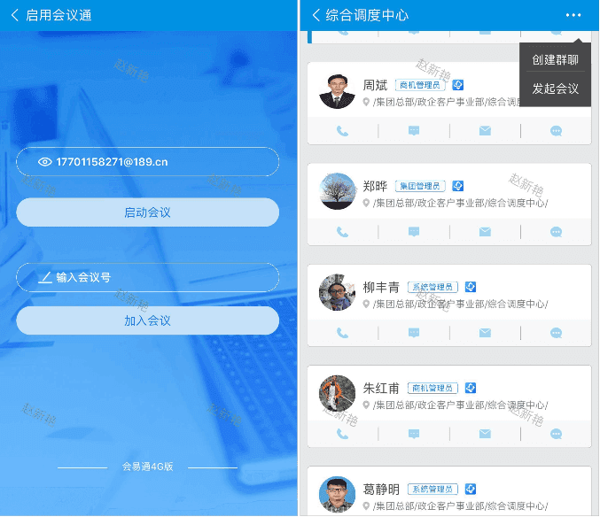 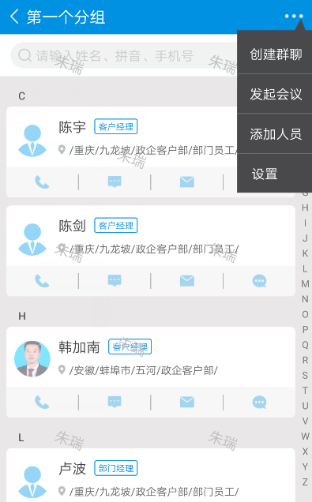点击会议窗口下方菜单中的“参会人”进入 参与者列表，再点击面板下方的“邀请”
手机界面：
你可以通过 邮件 的方式发送给相关与会者。在邮件中直接填写收件人邮箱地址即可发送。若您已在您的机器中联系人已保存过邮箱地址，可以直接在您联系人中选择相关人员。也可以通过短信发送会议邀请；或将会议链接复制出来拷贝到其他平台发送。
在即时通讯中收到邀请链接，点击邀请链接可以进入会议。
无需购买“会易通”账号，只需打开应用程序后输入会议号即可加入会议。
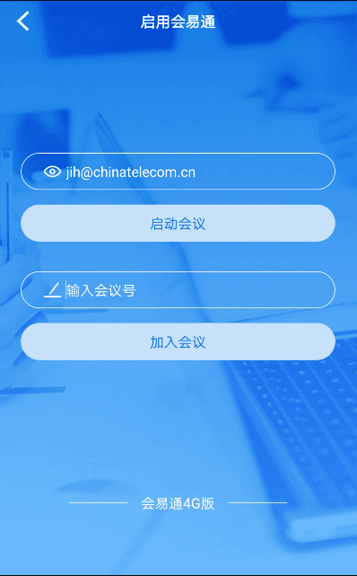您可以在设置中看到 会议信息，设置您的个人信息 及静音等。
界面：
1.会议中的音频默认为互联网语音，请确认您的麦克风和扬声器是否正常工作。
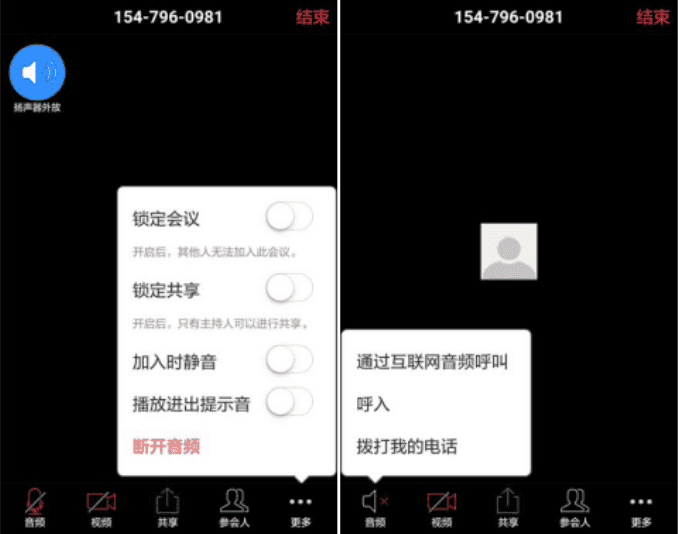2.要将自己设为静音或取消静音，请单击视频窗口的麦克风图标
在会议期间，点击“参会人”，可以查看参会者列表，并对参会者进行管理
点击该窗口底部的“全体静音”和“解除全体静音”按钮，可以控制参会者的语音。
点击参会者，可以对每个参会者进行更多操作。可以对自己进行“静音或解除静音”、“焦点视频”，“改名”的操作。如果是主持人，还可以对其他参会者进行操作，如：停止举手、静音/解除静音、和参会者发起聊天，设置参会者为焦点视频（焦点视频必须有3方以上开启视频才有此选项），设置参会者为主持人，允许参会者对会议进行录制，将参会者设为等待状态、关闭参会者停视频、将参会者设为联席主持人，更改参会者屏幕显示名及移除参会者。
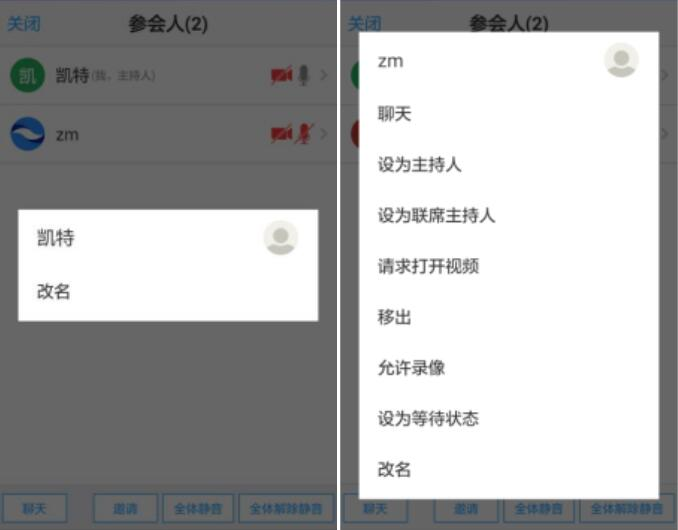更多：点击“更多”图标，在打开的菜单中，在此可以对全体参会者进行更多操作，包括在参会者进入会议的时候是否静音加入，在参会者进出会议的时候是否播放进出提示音，是否对会议加锁或者是否对共享加锁。如果选择对锁定会议，那么就不能有新的参会者进入该会议。如果选择对共享加锁，那么只有主持人才能共享屏幕。
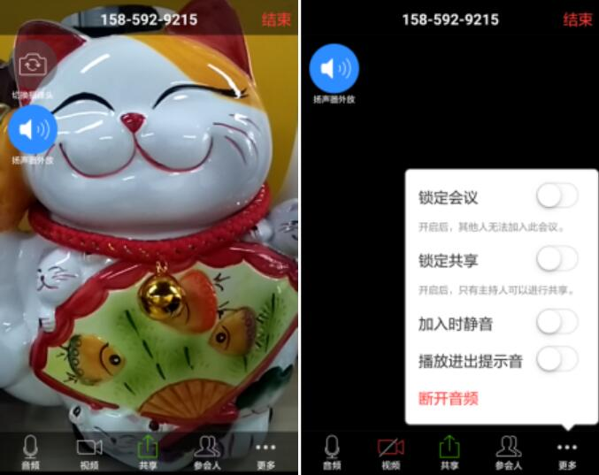屏幕共享用于向参与者演示您的文档、演示文稿或任何您希望与其共享的内容。
共享图片：您可以与参与者共享图片
共享文档：您可以与参与者共享文档
共享网页：您可以打开任何网页与参与者共享
共享书签：您可以与参与者共享书签
共享屏幕：安卓5.0以上的系统可以在会议中共享屏幕
具有高清视频会议功能的 “会易通” 拥有高清视频会议技术，它可将屏幕共享、音频会议和视频会议结合在一起。 会议参与者可以在查看演示者的屏幕时可以切换到视频窗口，一屏可以显示4个视频，一场会议最多显示200个高清视频会议流。 向左侧滑动屏幕，将窗口从共享屏幕切换到视频屏幕，重新向右滑动，切换回共享屏幕。
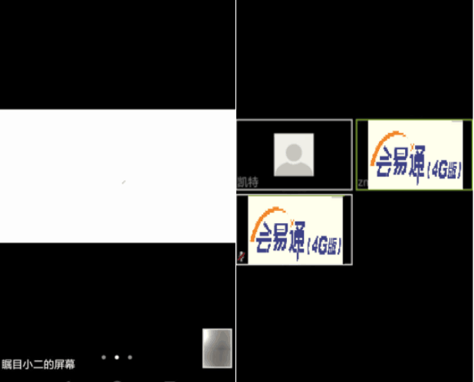在会议期间，您可以切换至驾驶模式，在驾驶模式下，本地视频被、麦克风被关闭，可以通过“点击发言”来发言，极大的节约流量。
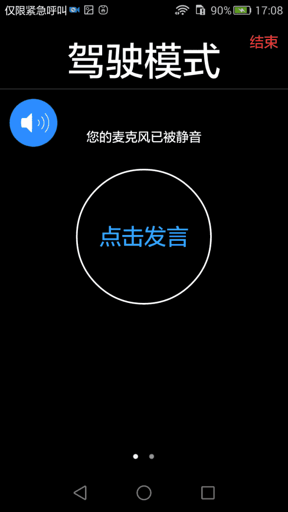参会人可以彼此进行对话，以便在会议期间即时发送和接收私人消息。 组织者还可以向全体与会者发送文字消息。
1.与某位参会人或所有参会者对话
从“参会人”中选择某位，点击选择 聊天输入内容即可发送。
2.向所有人发送对话消息
点击“聊天”中选择， 输入内容即可向所有人发送消息。
您可以在会议期间 – 甚至可以在所安排的结束时间之前 – 随时离开或结束会议。 您可以选择单独离开会议，而不结束其他人的会议，以便其他人可以继续进行会议。
点击屏幕左上角的“结束/离开”按钮，可以结束会议或者退出会议。
1. 离开会议
在会议期间离开会议之前，确保还有其他参会者。如果没有其他参会者，请从参与者列表中选择某位成员的名称，然后选择 设为主持人之后再离开。如果不做设置，系统会自动选择一位参会人作为主持人。
2.结束会议
结束会议
您可以随时启动一个即时会议，而无需提前进行安排。 您点击“会易通”微服务或者在部门或自定义群组的功能菜单中都可以使用您的会易通账号登录会易通打开一个会议。
在视频窗口下方的菜单中点击“参与人” 按钮，选择“邀请”
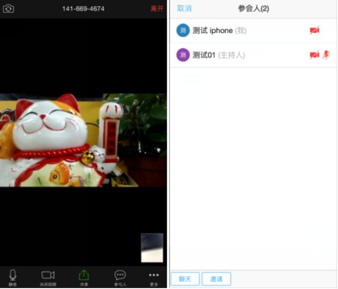可以选择下列方式发送邀请
1.发送邮件：您可以通过邮件将会议邀请发送给参会人。
2.发送短信：您可以发送给手机中已有的联系人。
3.复制链接：您可以粘贴到任何所需要发送的邮件或者即时消息窗口。
在即时通讯中收到邀请链接，点击邀请链接可以进入会议。
无需购买“会易通”账号，只需打开应用程序后输入会议号后即可加入会议。
您可以在设置中看到 会议信息，设置您的个人信息及会议选项。
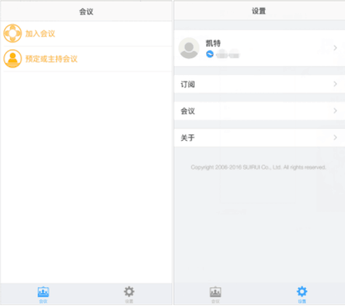 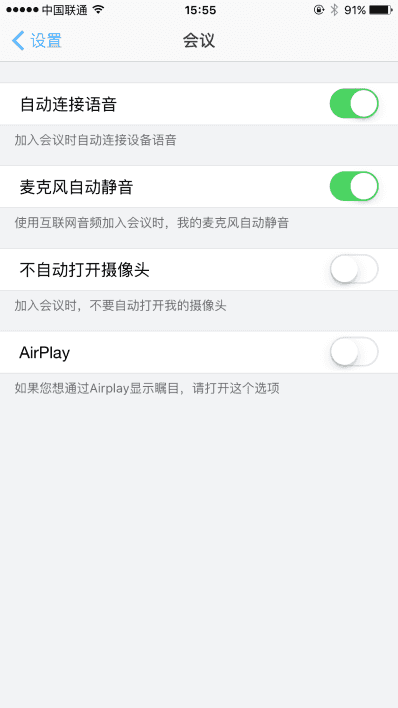在使用 麦克风和扬声器 连接到音频会议时，我们建议您使用耳麦，并将麦克风放在远离其他扬声器或设备的位置。
1.在 更多 中选择 断开音频 选项，再点击 选择麦克风和扬声器或电话语音加入
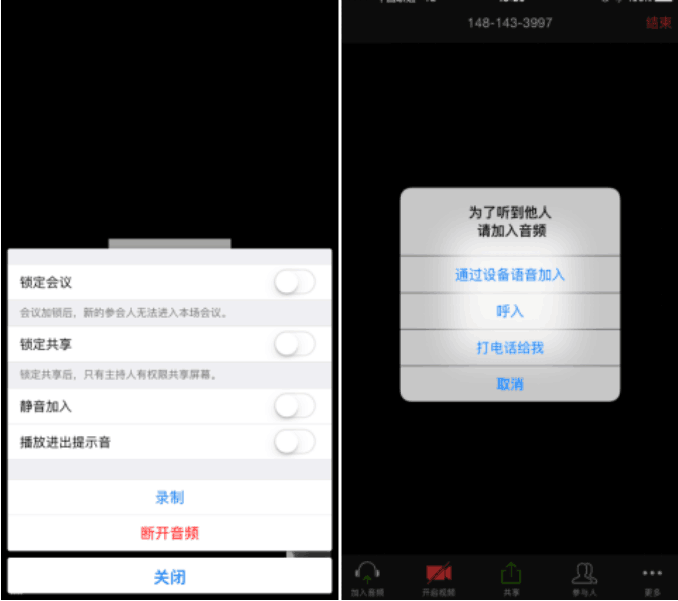2.通过设备语音加入 确认您的麦克风和扬声器是否正常工作。
3.要将自己设为静音或取消静音，请单击视频窗口下方菜单中的的麦克风图标
在会议期间，点击“参会人”
点击该窗口底部的“全体静音”和“解除全体静音”按钮，可以控制参会者的语音。
点击参会者，可以对每个参会者进行更多操作。可以对自己进行“静音或解除静音”、“焦点视频”，“改名”的操作。如果是主持人，还可以对其他参会者进行操作，如：停止举手、静音/解除静音、和参会者发起聊天，设置参会者为焦点视频（焦点视频必须有3方以上开启视频才有此选项），设置参会者为主持人，允许参会者对会议进行录制，将参会者设为等待状态、关闭参会者停视频、将参会者设为联席主持人，更改参会者屏幕显示名及移除参会者。
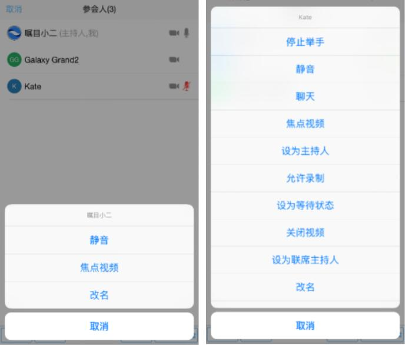更多：点击“更多”图标，在打开的菜单中，在此可以对全体参会者进行更多操作，包括在参会者进入会议的时候是否静音加入，在参会者进出会议的时候是否播放进出提示音，是否对会议加锁或者是否对共享加锁。如果选择对会议加锁，那么就不能有新的参会者进入该会议。如果选择对共享加锁，那么只有主持人才能共享屏幕。
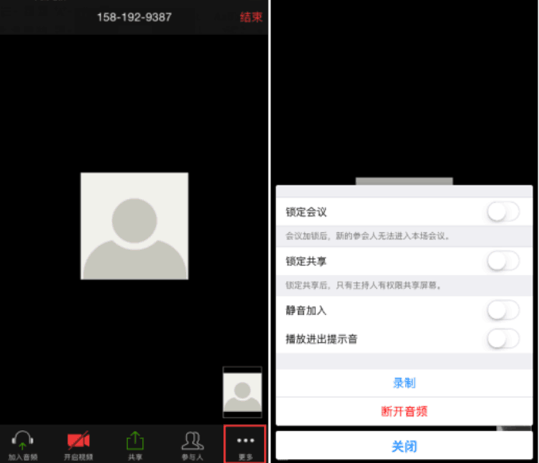屏幕共享用于向参与者演示您的文档、演示文稿或任何您希望与其共享的内容。
共享图片：您可以图片与参与者共享
共享网页：您可以打开任何网页与参与者共享
从书签共享：您可以与参与者共享书签
具有高清视频会议功能的 “会易通” 拥有高清视频会议技术，它可将屏幕共享、音频会议和视频会议结合在一起。 会议参与者可以在查看演示者的屏幕时可以切换到视频窗口，一屏可以显示4个视频（Iphone手机），一场会议最多显示200个高清视频会议流。向左侧滑动屏幕，将窗口从共享屏幕切换到视频屏幕，重新向右滑动，切换回共享屏幕。
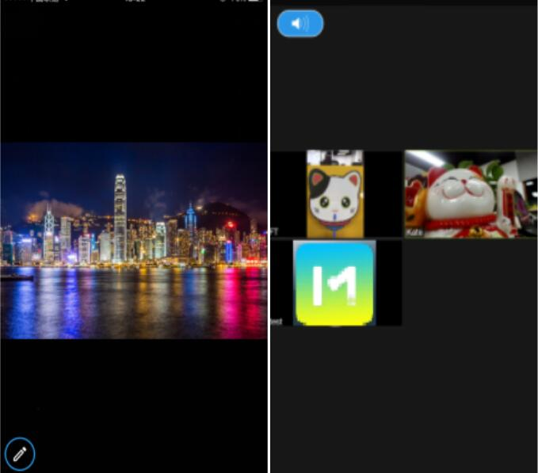在会议期间，您可以切换至驾驶模式，在驾驶模式下，本地视频被、麦克风被关闭，可以通过点击发言，极大的节约流量。
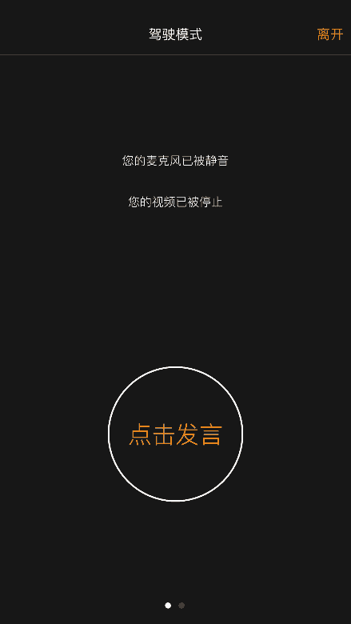参会人可以彼此进行对话，以便在会议期间即时发送和接收私人消息。 组织者还可以向全体与会者发送文字消息。
从“参会人”中选择某位，点击选择 聊天 输入内容即可发送。
点击“聊天”中选择 每个人， 输入内容即可向所有人发送消息。
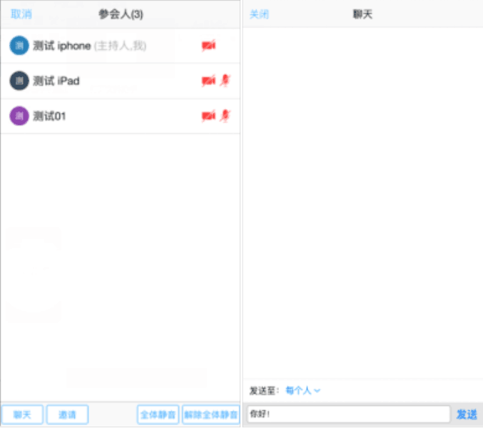 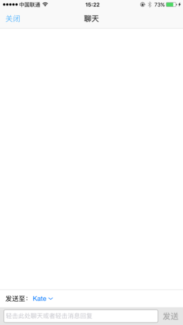您可以在会议期间 – 甚至可以在所安排的结束时间之前 – 随时离开或结束会议。 您可以选择单独离开会议，而不结束其他人的会议，以便其他人可以继续进行会议。点击屏幕左上角的“结束/离开”按钮，可以结束会议或者退出会议。
在会议期间离开会议之前，确保还有其他参会者。如果没有其他参会者，请从参与者列表中选择某位成员的名称，然后选择 设为主持人之后再离开。
结束会议
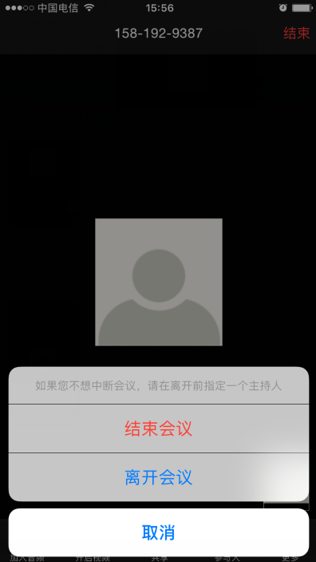